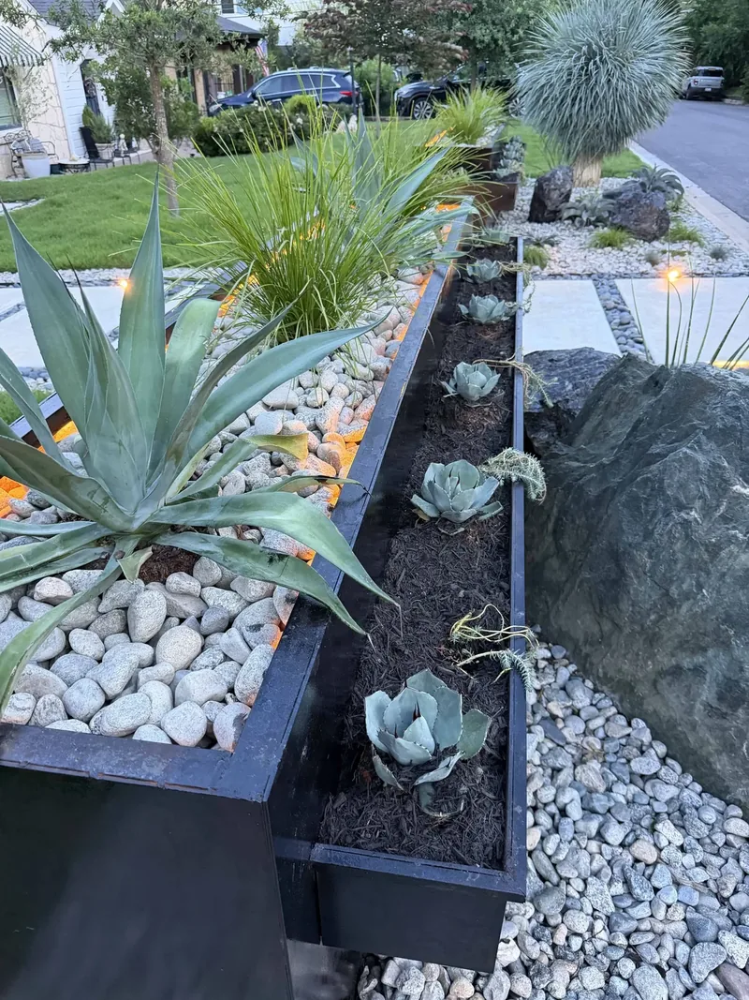
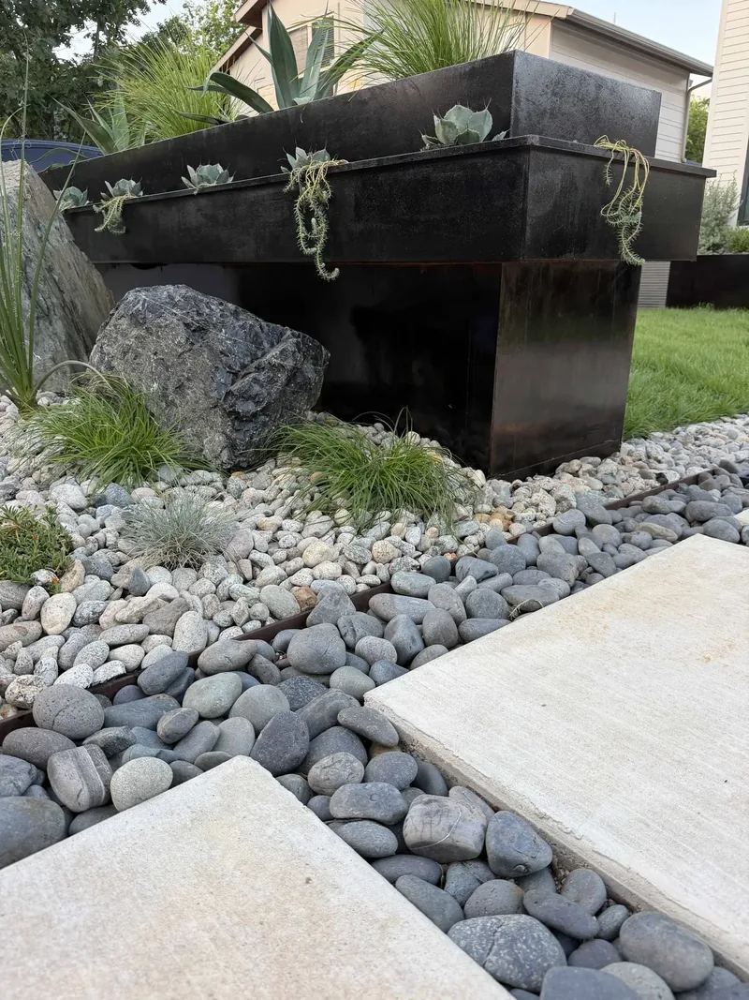

In Mueller, the Modifications Committee of the Mueller Master Association reviews exterior changes to an existing home, and most yard projects beyond planting need its written approval before work starts. The committee meets on the first Thursday of each month and has up to 60 days to answer a complete application. This guide gives the steps, the paperwork, and the yard rules, taken from the association’s own documents as they were posted on November 25, 2026. Red Agave Landscape draws the plans a committee reviews, and our own crew builds them.
Who Reviews a Yard Project in Mueller?
The Modifications Committee. Every Mueller homeowner is a member of the Mueller Master Association, the property owners association, and its Design Review Application opens with the rule:
"Any exterior modification to an existing residence within Mueller, including the installation of a pool, patio cover, front/side/rear landscaping, ramada, gazebo, or any other physical alteration to the appearance of a house or yard, must be approved in advance by the Modifications Committee."
A second body, the New Construction Council, reviews new construction. The staff contact is Mueller Community Life at mueller@coherelife.com.
Row houses work differently in front. The association maintains the row house front yard landscaped areas, and the Modification Guidelines say owners may not alter them.
What Needs Approval, and What Does Not?
The association’s Residential Design Review Process Guide lists both.
| Needs review | Needs no review |
|---|---|
| New structures, such as fences, pergolas, and sheds | Landscape changes that follow the landscape guidelines and the approved plant list |
| Hardscaping and pools | Low-voltage landscape lighting |
| Exterior lighting, other than low-voltage landscape lighting | A patio that is not visible to the public |
| Any landscaping plan that departs from the guidelines and the approved plant list | A deck or concrete patio that meets every size, height, and impervious cover limit for the housing type |
| Artificial turf, fire elements, shade structures, rain harvesting equipment, and driveway changes, all listed on the application | Stepping stones or a pervious walkway that stays inside the property line |
The Guide says of the right-hand column: "These exceptions are narrow." Its instruction for anything in doubt is to ask staff before the work starts. And for everything on the left: "Do not begin work, schedule contractors, or purchase nonreturnable materials until you have written approval in hand."
What Goes in a Mueller Design Review Application?
An online form, a photo, a fee, a deposit, and the details of the project. The Guide’s checklist:
With every application
- The completed online Design Review Application
- A current photograph of the entire front of the property, house and yard
- The application fee and the refundable project deposit
- A detailed description of the project
- The dimensions
- The materials and colors
- The name of the person or company doing the work
- The estimated completion date
When it applies
- A plat, survey, or site plan showing the property lines, easements, and setbacks
- Drawings, elevations, and exact measurements
- Renderings or marked-up photos
- A plant list and a landscape location plan, when hardscape or a drainage change affects the planting
The Guide says a rendering "does not need to be a professional CAD drawing." Ours is one. A Red Agave landscape design is a dimensioned CAD plan with a plant list and material selections, and where a plan is hard to picture we sketch the design over a photo of the house.
One point of order. The application says the committee’s approval comes first, "prior to any submission to the proper city/county agencies for permits."
How Long Does Mueller Design Review Take?
It runs on a monthly meeting.
| Step | What the documents say |
|---|---|
| Meeting | The first Thursday of each month |
| Deadline | Complete applications are generally due one week before the meeting |
| Decision | Usually by email within three business days after the meeting |
| Formal limit | Up to 60 days from the date a complete application is submitted |
| Outcomes | Approved, Approved with Conditions, Revise and Resubmit, or Denied |
| Changes after approval | Submitted and approved in writing before the change is made |
| When the work is done | Notify staff, so a completion inspection can be scheduled. The deposit is returned when the work matches the approval |
As of November 25, 2026, the application page carries a notice: the committee will not meet in December, and the next meeting is January 7, 2027.
Two clauses in the Master Community Covenant cover what happens next:
- No answer: approval is not automatic at day 60. The owner gives written notice, and the reviewer has 30 more days. After that, approval is deemed given, and it still cannot conflict with the design guidelines
- A denial: the owner can appeal to the board. The request goes to the association’s secretary within 15 days of the notice of disapproval, and the board answers within 30 days of receiving it
What Are Mueller’s Yard Rules?
They come from the Mueller Modification Guidelines and from the landscape appendix of the Mueller Design Book. The association’s Design Review page calls the Design Book and its appendices "the controlling standards for the review of modifications."
| Topic | Rule |
|---|---|
| Plants | No invasive plants, in public view or out of it. No trees in public utility easements. Native and well-adapted plants are encouraged |
| Rock and gravel | At least 40 percent of the yard in public view stays turf and plant beds. Replacing more than 60 percent of the lawn with rock is reviewed |
| Mulch | Accepted: shredded cedar, shredded hardwood, river rock, and decomposed granite. Not accepted: lava rock, rubber mulch, color-enhanced wood mulch, and cypress or redwood mulch |
| Edging | Accepted: stone, steel, and concrete. Not accepted: plastic, wood posts, landscape timbers, railroad ties, and scalloped precast concrete |
| Walls | Masonry, or faced with masonry. No standard concrete block, plain or painted. A low retaining wall of up to 18 inches is permitted along the street-fronting property line |
| Front fences | No taller than 36 inches, including masonry of up to 18 inches |
| Side yard fences | Up to 72 inches, set back at least 10 feet from the front wall of the house, and 18 inches from the property line on a street-facing side |
| Lighting | Aimed or shielded to keep light off neighboring properties. Fixtures on 120 volt power or gas are reviewed. Floodlights are generally prohibited |
| Drainage | No change in grading that sends water onto a neighboring property or into an alley |
| Impervious cover | Yard houses and garden court houses: 75 percent of the lot. Row houses and shop houses: 95 percent |
| The strip by the curb | Plants with a mature height of about two feet or less. The root barrier at the sidewalk and the clay barrier at the curb stay in place |
| Pools | No above-ground pools |
The Design Book’s landscape appendix is written for homebuilders, and it sets a tighter line on rock: no more than 10 percent of a yard in public view left unplanted. Where rock mulch, decomposed granite, or river gravel fills a narrow space, it calls for plants in it. Plan for plants in every gravel area.
The plant lists are in the appendix to the Design Book and in the association’s approved plant list. They include a list of plants that cannot be planted.
Texas law sets the outer limit. The Texas Property Code, Section 202.007 says an association cannot prohibit drought-resistant landscaping or water-conserving natural turf. It can require a plan for review, and it can regulate gravel, rocks, and cacti.
What Does the City of Austin Add?
Its own permits. The Guide says: "Modifications Committee approval is separate from any permit required by the City or another governmental authority."
The City’s list of work exempt from building permits covers the small jobs:
- Fences: not over 7 feet high
- Retaining walls: not over 4 feet, measured from the bottom of the footing
- Decks: no more than 200 square feet, no more than 30 inches above grade, and not attached to the house
- Concrete flatwork: outside the public right-of-way
Exempt work still has to follow City code. A tree 19 inches or more in diameter is protected, and removing it takes a permit (City Arborist). And anything permanent in the strip by the curb is on City right-of-way: the Modification Guidelines require a City license agreement for paving or structures there, and the City can remove them.
How Does a Modern Front Yard Get Through Review?
On the drawing. Mueller’s lots are small, and the yard is in public view from the street and often from an alley, so nearly everything built in it is reviewed.
Raised steel planters are how we plant a narrow lot. They lift the plants above the ground, hold the drainage that agaves need, and carry low-voltage lighting on their rims. The published guidelines give standards for walls, fences, edging, and mulch, and none for a raised steel planter, so the committee judges one on what the application shows: where it sits, how tall it stands, what it is made of, and what grows in it.


Those planters are in Tarrytown. For a Mueller application, the same kind of project is drawn with:
- A site plan: the property lines, easements, and setbacks, with every planter, pad, and bed dimensioned
- Heights: each planter and wall marked by height
- A plant list: drawn from Mueller’s lists, with nothing from the list of plants that cannot be planted
- Materials: steel, concrete, and river rock or decomposed granite, with plants in every gravel area
The owner of Red Agave draws every plan after a free on-site consultation, and the CAD plan is included. See our Mueller page, our custom steel planters page, and the drawings on our design plans page.
What Sources Did We Use?
Every rule above comes from the documents below, read on November 25, 2026. The association updates its documents, and each lot type has its own recorded covenant, so check the current copy for your lot.
- Mueller Master Association: Design Review, Design Review Application, Residential Design Review Process Guide, Mueller Modification Guidelines, Residential Landscape Design Guidelines, approved plant list, and the Master Community Covenant
- City of Austin: work exempt from building permits and the City Arborist
- Texas Property Code, Section 202.007
Mueller Landscape Approval
Do I need approval to change my landscaping in Mueller?
For planting that follows the landscape guidelines and the approved plant list, no. Hardscape, structures, fences, pools, and any landscaping plan that departs from the guidelines need written approval from the Modifications Committee first.
How long does Mueller design review take?
The committee meets on the first Thursday of each month, and complete applications are generally due a week before. A decision usually comes by email within three business days of the meeting. The formal limit is 60 days from a complete application.
Can I replace my lawn with gravel in Mueller?
In part. The Modification Guidelines keep at least 40 percent of the yard in public view in turf and plant beds, and a plan that replaces more than 60 percent of the lawn with rock is reviewed. Lava rock and rubber mulch are not accepted.
Is artificial turf allowed in Mueller?
It needs the committee’s review. The application lists artificial turf as a reason for review and asks for the manufacturer, the product name, the pile height, the face weight, the warranty, and a photo sample.
Can I change the front yard of a Mueller row house?
The association maintains the row house front yard landscaped areas, and the Modification Guidelines say owners may not alter them. Ask Mueller Community Life which parts of your lot are yours to change.
What happens if I build without approval in Mueller?
The Master Community Covenant lets the association require the owner to remove the work and restore the lot at the owner’s cost. The Design Review page says it is much easier to go through the process first than to remove a modification at your own expense.